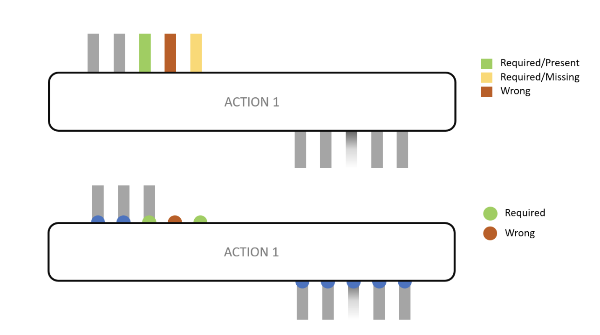
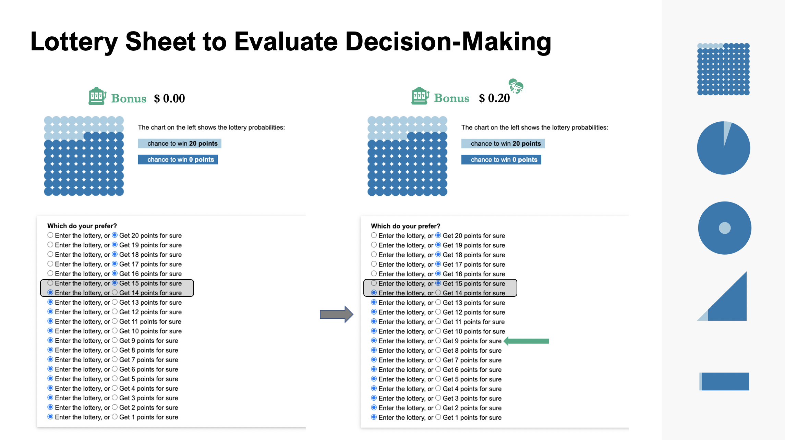
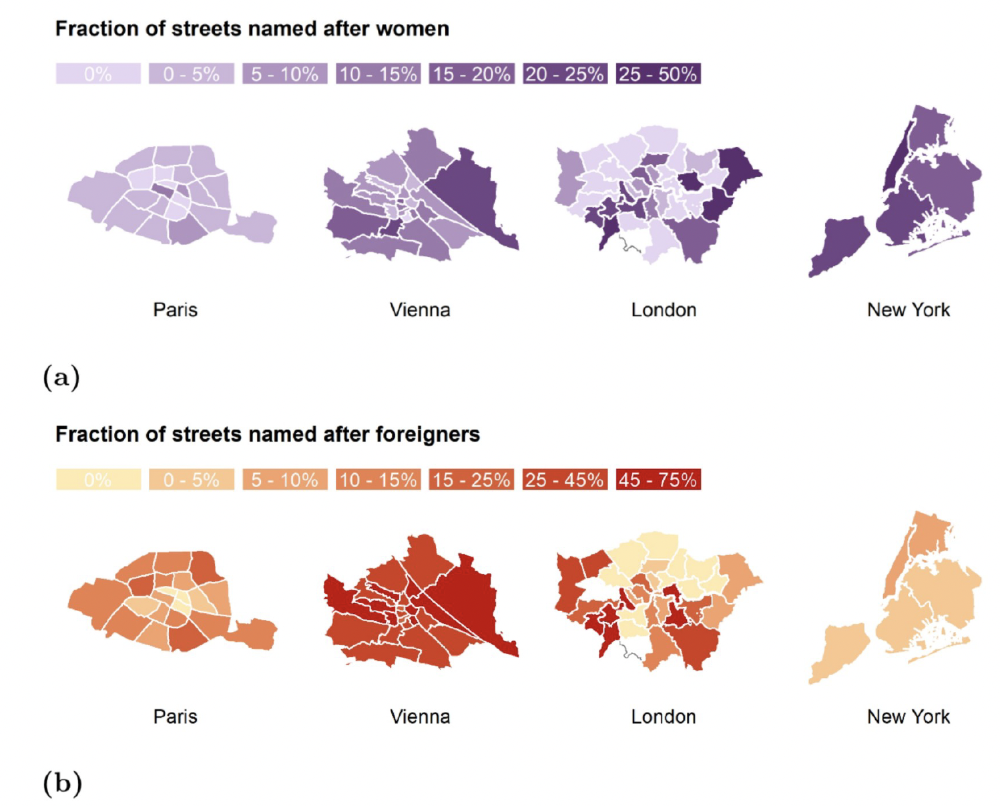
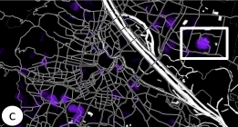
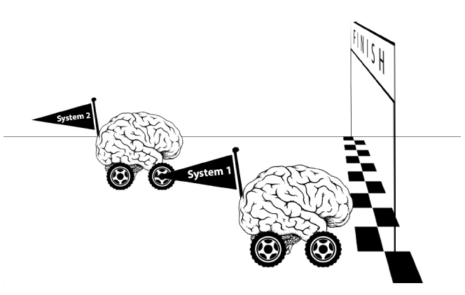
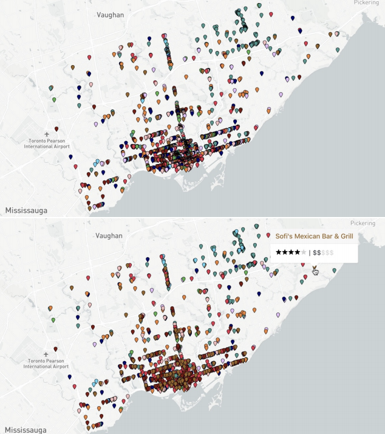

Conference Proceedings

The Anatomy of a Plea: How Uncertainty, Visualizations & Individual Differences Shape Plea Bargain Decisions
Melanie Bancilhon, Alvitta Ottley, Andrew Jordan
ACM CHI Conference on Human Factors in Computing Systems, 2025
PDF
Video
Song
Trust Calibration for Joint Human/AI Decision-making in Dynamic and Uncertain Contexts
Laura R. Marusich, Benjamin T. Files, Melanie Bancilhon, Justine C. Rawal, Adrienne Raglin
27th International Conference on Human-Computer Interaction, 2025
PDF

Why Combining Text and Visualization Could Improve Bayesian Reasoning: A Cognitive Load Perspective
Melanie Bancilhon, AJ Wright, Sunwoo Ha, Jordan Crouser, Alvitta Ottley
ACM CHI Conference on Human Factors in Computing Systems, 2023
HTML
PDF

VizXP: A Visualization Framework for Conveying Explanations to Users in Model Reconciliation Problems
Ashwin Kumar, Stylianos Loukas Vasileiou, Melanie Bancilhon, William Yeoh, Alvitta Ottley
ICAPS Conference on Automated Planning and Scheduling, 2021
HTML
PDF

Let’s Gamble: How a Poor Visualization Can Elicit Risk Behavior
Melanie Bancilhon, Zhengliang Liu, Alvitta Ottley
IEEE Transactions on Visualization and Computer Graphics, 2020
HTML
PDF
Video

Streetonomics: Quantifying culture using street names
Melanie Bancilhon, Marios Constantinides, EP Bogucka, Luca Maria Aiello, Daniele Quercia
PLoS ONE 16(6): e0252869, 2021
HTML
PDF

Cartographic Design of Cultural Maps
Edyta Paulina Bogucka, Marios Constantinides, Luca Maria Aiello, Daniele Quercia, Wonyoung So, Melanie Bancilhon
IEEE Transactions on Computer Graphics and Applications, 2020
HTML
PDF

Beyond English: Centering Multilingualism in Data Visualization
Noëlle Rakotondravony,
Priya Dhawka, Melanie Bancilhon
IEEE Transactions on Visualization and Computer Graphics, 2023
HTML
PDF

Did You Get The Gist Of It? Understanding How Visualization Impacts Decision-Making
Melanie Bancilhon, Alvitta Ottley
IEEE Transactions on Visualization and Computer Graphics, 2020
HTML
PDF

Expectation Versus Reality: The Failed Evaluation of a Mixed-Initiative Visualization System
Sunwoo Ha, Adam Kern, Melanie Bancilhon, Alvitta Ottley
IEEE Transactions on Visualization and Computer Graphics, 2020
HTML
PDF

Toward an Optimized Human-AI Reviewing Strategy for Contract Inspection.
Melanie Bancilhon, Alexa Siu, Ryan Rossi, Nedim Lipka
The New Era of Business Intelligence, IntechOpen, 2024
HTML
PDF

Improving Evaluation Using Visualization Decision-Making Models: A Practical Guide
Melanie Bancilhon, Lace Padilla, Alvitta Ottley
Visualization Psychology, Springer, 2023
HTML
PDF
`

Icons are Best: Ranking Visualizations for Proportion Estimation
Zhengliang Liu, Melanie Bancilhon, Alvitta Ottley
IEEE Information Visualization, 2019
PDF